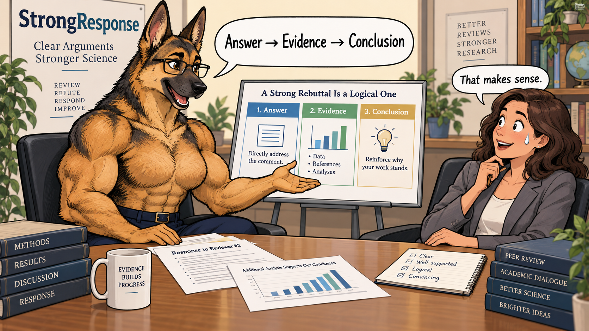

💪 StrongResponse
首句回答，证据跟上。
论文写作与绘图：BeautyPaper · 审稿回复：StrongResponse
这里有一份可以直接使用的 skill。 下载 rebuttal skill · 用法

下载后，把论文、完整审稿意见和已有证据交给 Codex；作者核对事实、决定是否补实验，最后定稿。当轮官方格式、字数、匿名与 AI 使用规定优先。 铁律是本教程的默认要求，官方规则优先；普通建议按问题选择。
skill 安装与用法
下载 ZIP，解压并保留完整的 rebuttal 文件夹。让 Codex 读取 rebuttal/SKILL.md，填入论文、完整 review、已有证据、当轮规则和允许修改的范围。
制作类似教程：下载教程编排 skill · SKILL.md。内容顺序、简洁表达、完整案例与旁批、窄屏检查均包含在内。
复制给 Codex：起草与逐题检查
读取 rebuttal skill。目标会议与当轮规则：【】；论文：【】；完整 review：【】；已有结果及位置：【】；允许修改的文件：【】。先按审稿人拆出全部问题，编号 Q1.1、Q1.2；同一题有多问时用 Q1.2a、Q1.2b。每题用 > **Qx.x: 原问题** 开头，首句直接回答，再给证据、解释和位置。每位审稿人交付一份可复制 Markdown。随后运行 revise loop，按原问题检查漏答、证据与逻辑，只改未通过项。缺证据就列出缺口与最小检验，不自动跑实验、修改稿件或提交回复。不得编造结果、隐藏必要条件或预测提分。 执行标为【铁律】的要求：每问必答，首句回答，证据可定位；比较数据用表格，保留必要条件和负结果；承诺不充当结果，同一实验跨 Q 命名一致。
把【】换成材料或文件。先查清问题，再写回复；缺证据的地方由作者决定如何处理。
1. 整理问题与证据
先读完整 review，再写回答。不要只盯着 Questions：具体关切也可能出现在 Weaknesses、建议和评分理由里。
- 铁律 Weaknesses、Questions、建议和评分理由里的具体关切都要回答；保留原意，一句话有多问就拆开。
- 逐题记录：原问题 → 回应类型 → 现有依据及位置 → 缺口。
- 定义不清给定义，流程不清给案例，效果存疑给对照，实际错误就修正。
- 优先整理已有实验；确实缺证据时，提出能区分争议解释的最小检验，交作者决定。
- 铁律 向工具提供材料前，确认当轮保密与 AI 规则允许；不上传密钥、个人数据或无权使用的材料。
问题清单
| ID | 原问题 | 需要回答什么 | 已有证据与位置 | 缺口 | | :--- | :--- | :--- | :--- | :--- | | Q1.1 | 【审稿原话】 | 【具体结论】 | 【节、表、记录】 | 【仍缺什么；没有则写无】 | | Q1.2a | 【子问题：定义】 | 【对象与判定方式】 | 【定义所在位置】 | 【歧义在哪里】 | | Q1.2b | 【子问题：有效性】 | 【必要对照】 | 【已有比较】 | 【不能由现有结果回答的部分】 |
这张表供作者整理问题；正式回复按下一节的 Q&A 交付。
2. 逐题回复格式
一题一个答案：结论 → 证据 → 解释 → 位置。首句把问题答了，后面才有必要读。
- 铁律 默认交付：每位审稿人单独一个 Markdown 代码块；提交时按平台要求粘贴正文。
- 铁律 问题标题固定为 > **Q1.1: [问题标题]**：引用、加粗、编号、冒号都保留。
- 铁律 一个大问题有多问，拆成 Q1.1a、Q1.1b，标题忠于原意。
- 铁律 第一句直接回答：是否题先给结论，证据不足就说明不能判断；原因题给原因，流程题给操作，数值题给具体值。
- 铁律 回答之后给必要设置、证据、解释与表号、节号或行号；不先感谢，不先讲背景。
- 铁律 可比较数据用表格，写全条件、单位、指标方向和统计口径；表后解释结论，不逐格复述。
- 铁律 一个小点一段；问题之间空一行，不堆分隔线，简短致谢放最后。
- 铁律 修改给真实位置；只有实际改过稿件，才能写成已修改。
- 铁律 同一实验跨 Q 引用，首次定义简短名称，后续统一使用；每个 Q 仍要独立读懂。
一位审稿人的完整回复
> **Q1.1: How does [method] differ from [closest prior work]?** The main difference is [specific mechanism or evaluation target]. [Prior work] uses [input or operation] to produce [output], whereas [our method] uses [corresponding input or operation] to produce [corresponding output]. This difference addresses [precise limitation] under [stated scope]. The description and comparison are in Section [X] and Table [Y]. > **Q1.2: Does [component] improve [metric]?** Under [tested setting], [component] [improves / does not improve] [metric] relative to [control] by [absolute difference and unit]. We hold [necessary conditions] fixed and change only [tested component]. | Configuration | [Metric and direction] | [Sample size or number of runs] | | :--- | :---: | :---: | | [Control] | [Verified value] | [Verified count] | | [With component] | [Verified value] | [Verified count] | This comparison supports [bounded conclusion]; it does not establish [untested mechanism or generalization]. The results and protocol are in [table or record] and Section [X].
方括号全部换成已核实材料；增删表格列取决于比较需要，不能删掉影响公平性或解释结果的条件。若 Q1.2 同时问定义与效果，拆为 Q1.2a、Q1.2b，分别首句回答。
一段回复怎样读
教学模板：把方括号换成自己的真实证据。
Under [tested setting], [component] improves [metric] relative to [control] by [absolute difference and unit].1 We hold [confounding factors] fixed and compare [configurations] on [same test set].2 The result supports [bounded conclusion], but does not establish [untested mechanism].3 The protocol and results are in Section [X] and Table [Y].4
StrongResponse · 原创教学模板
出处与复用范围
原创教学模板，不是真实审稿回复。
本指南原创内容采用 CC BY 4.0；转载请附作者、原文链接与许可，改写注明改动。
3. 四类回答模板
按问题选证据，不强行把每个问题都变成补实验。澄清用定义和流程，效果用比较，机制用能区分解释的检验。
- 铁律 解释性答复：先定义具体对象，再给输入、操作、输出；必要时用一条样例走完整个流程。
- 铁律 实证答复：报告真实绝对值、比较对象、指标方向与必要条件。平均值涉及波动时给相应不确定性。
- 铁律 合理不同意见：指出争议前提和证据，只讨论论文；确有错误就修正，不评价审稿人的能力或动机。
- 铁律 承诺不是证据。阶段性结果写实际范围；没有直接证据就说明缺口、缩小主张，不能把计划写成已完成。
- 铁律 表格保留影响判断的设置差异和负结果；删列是为了省阅读时间，不能为了改变结论。
3.1 定义与流程
> **Q1.2a: What does [term] mean, and how is it used?** [Term] denotes [concrete object and decision rule]. For input [x], [module] performs [operation] and returns [y] to [next module]. This interface is specified in Section [X]; [example or algorithm] shows [the disputed step].
术语先落到对象；举例要解释被问到的环节，不重讲整篇方法。
3.2 实验与对照
> **Q1.2b: Could [alternative explanation] account for [result]?** Under [matched setting], the result [persists / does not persist] when [confounding factor] is controlled. We compare [A] and [B] with identical [necessary conditions]; [metric] is [verified A] versus [verified B] ([direction]; Table [R]). This comparison [supports / does not support] [bounded conclusion]. [Remaining uncertainty] is not resolved by this test.
对照必须能检验替代解释；同一批数据换个表头，不等于排除了混淆。
3.3 有依据的不同意见
> **Q2.1: Does [specific concern] invalidate [claim]?** [Specific concern] does not invalidate [bounded claim] under [stated setting], because [verified fact]. The concern assumes [premise], whereas [paper location or verified record] specifies [relevant fact]. This supports [limited conclusion]. We agree that [valid part of the concern], and [verified clarification or correction, if applicable] is documented in [location].
只有证据支持时才使用“不推翻主张”的首句；依据不够就说明不能判断。不同意见也要承认成立的部分。
3.4 目前不能回答
> **Q2.2: Does [claim] hold under [untested condition]?** We do not have direct evidence for [claim] under [untested condition]. The available result in [location] covers [tested scope] only. We therefore limit our conclusion to [supported claim]. Establishing [broader claim] would require [specific comparison or measurement].
没有依据就把边界写清楚；只有稿件确已修订时，才能追加具体修改与位置。
4. Revise loop
回到原 review，逐题查漏答、证据与逻辑。先修内容，再缩文字；一篇流畅的答非所问，还是答非所问。
- 铁律 按原问题清单检查，逐项定位具体 Q、段落或表格；不能因为别处提过就算回答。
- 铁律 先只读题目与首句：是否答了原问题？再读证据：能否支撑这句结论、区分争议解释？
- 铁律 核对数字、引用、范围、必要条件和位置；表格要能独立说明比较了什么。
- 铁律 只改未通过项，改后重查同一张清单；新证据引出新问题时补入清单。
- 铁律 覆盖完整、证据对应、逻辑成立、篇幅合规后停止，交作者定稿。缺实验时列出需要作者决定的事项，不预测提分或录用。
让 Codex 逐题检查
运行 revise loop。输入为论文【】、原 review【】、回复【】、真实证据【】、当轮规则【】。 按 review 原顺序逐题检查： 1. 原问题是否有明确对应的 Q？ 2. 首句是否直接回答，而非重复问题？ 3. 证据是否支持结论、区分争议解释，且保留必要条件与范围？ 4. 图表、引用和修改位置是否真实？ 对未通过项输出：Q 编号｜原问题｜回复位置｜具体缺口｜最小改法｜还缺的证据。只修改获授权的回复文件，不自动跑实验或改稿。修改后重查同一清单；最终交付每位审稿人的独立 Markdown，把检查记录与证据缺口单独给作者。
检查记录不粘进正式回复；它帮助作者决定如何修改，不代替作者判断。
5. 追问与 AC 总结
追问只补新增信息。给 AC 的总结写问题、回应、证据和剩余分歧，不重贴整份 rebuttal。
- 铁律 保留原 Q 编号和问题关系；新子问可续为 Q1.2c，编号仍以平台要求为准。
- 铁律 先回答追问，再定位新增证据；已经讲清的背景用位置引用。
- 铁律 AC 指 Area Chair。总结按重要关切组织，写清哪些已澄清、哪些仍未解决；引用评价须与原文一致。
- 铁律 不猜未回复审稿人的态度，不请求提分或接收，把判断交给审稿方。
5.1 追问回复模板
> **Q1.2c: [Faithful title of the follow-up question]** [Direct answer to the new question, with the necessary scope]. **New evidence**: Compared with Q1.2, we now provide [verified result or clarification]. Under [necessary setting], [comparison or reasoning] shows [specific finding] ([table / section / lines]). This supports [bounded conclusion] because [link between the evidence and the question]. **Revision**: Section [X], lines [Y–Z], now states: “[Exact wording of the completed revision].” **Remaining issue**: The evidence covers [tested scope]; it does not establish [unresolved claim]. [Specific evidence still needed, if any].
保留原 Q 编号，追问新子项续编。填真实证据与位置；无新结果就给已有依据和明确边界。未改稿删 Revision，没有剩余疑问删 Remaining issue；可比较数据改用紧凑表格。
5.2 给 AC 的总结模板
The evidence supports [central conclusion] under [evaluated setting]. The main concerns were [issue A] and [issue B]. **1. [Key concern A] — Reviewer [ID], Q[X.X].** The concern was [faithful summary]. Our response [direct answer]. [Verified comparison or clarification] in [table / section / lines] supports [bounded conclusion]. [Remaining disagreement or evidence gap, if any]. **2. [Key concern B] — Reviewer [ID], Q[Y.Y].** The concern was [faithful summary]. Our response [direct answer]. [Verified result or completed revision] in [table / section / lines] establishes [what the evidence shows], but does not establish [unresolved claim, if any].
按关键关切增删条目，同一关切可列多个审稿人和 Q。首句给有依据的总体结论；每项写关切、回应、证据位置和剩余分歧。不把作者的解释写成“审稿人已认可”，不猜未回复者态度。
没有找到。换个短词试试。
评论与批注
选中正文，可以高亮批注。
暂无评论。